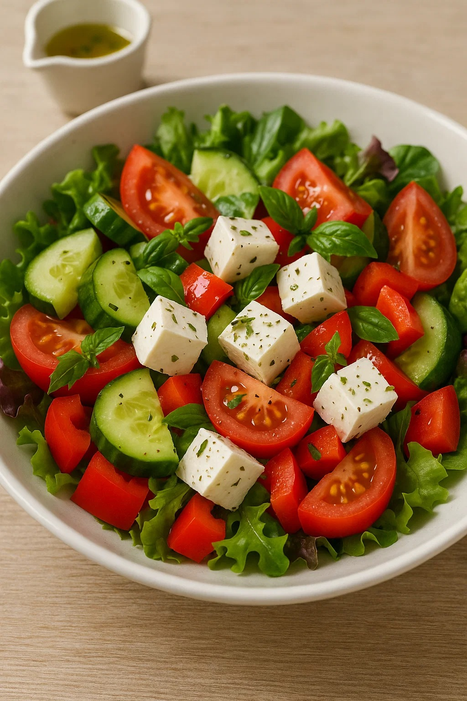
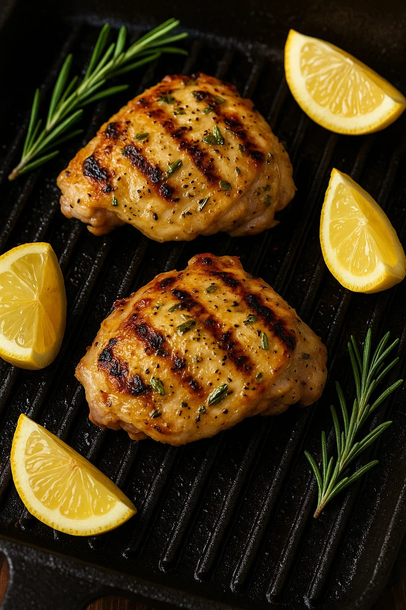
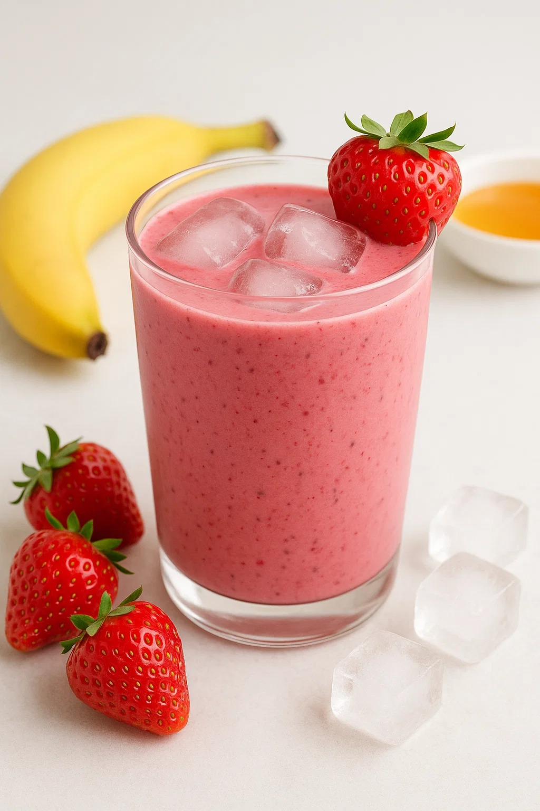

День 1: Салат с козьим сыром и свежими овощами
Ингредиенты:
- 100 г козьего сыра
- 1 огурец
- 2 помидора
- 1 болгарский перец
- 50 г микса салата
- Оливковое масло, базилик, соль, перец
Приготовление:
- Нарежьте овощи и поместите в салатницу.
- Добавьте кусочки козьего сыра.
- Заправьте оливковым маслом, посолите, поперчите и добавьте базилик.
- Перемешайте и подавайте.

День 2: Курица с лимоном и розмарином на гриле
Ингредиенты:
- 2 куриных бедра
- 1 лимон
- 2 веточки розмарина
- Оливковое масло, соль, перец
Приготовление:
- Смешайте сок лимона, рубленый розмарин, соль и перец, обмажьте курицу и оставьте мариноваться 1–2 часа.
- Обжарьте на гриле до золотистой корочки.
- Подавайте с дольками лимона.

День 3: Гречневая каша с овощами и грибами
Ингредиенты:
- 1 стакан гречки
- 200 г шампиньонов
- 1 морковь
- 1 луковица
- Растительное масло, соль, перец
Приготовление:
- Отварите гречку до готовности.
- Обжарьте нарезанные лук, морковь и грибы.
- Смешайте кашу с овощами, приправьте и подавайте.

День 4: Свежий томатный суп с базиликом
Ингредиенты:
- 5 крупных помидоров
- 1 луковица
- 2 зубчика чеснока
- Оливковое масло, соль, перец, свежий базилик
Приготовление:
- Обжарьте лук и чеснок в масле.
- Добавьте нарезанные помидоры и тушите 10 минут.
- Влейте воду, приправьте, доведите до кипения и варите ещё 15 минут.
- Пропустите через блендер и украсьте листьями базилика.

День 5: Котлеты из рыбы с картофельным пюре
Ингредиенты:
- 500 г белой рыбы (треска, судак)
- 1 яйцо
- 4–5 картофелин
- Масло, соль, перец
Приготовление:
- Прокрутите рыбу через мясорубку, добавьте яйцо, приправьте.
- Сформируйте котлеты и обжарьте до золотистого цвета.
- Приготовьте картофельное пюре и подавайте вместе.

День 6: Салат с авокадо и креветками
Ингредиенты:
- 1 спелый авокадо
- 150 г очищенных креветок
- 1 помидор
- Листья салата
- Оливковое масло, лимонный сок, соль, перец
Приготовление:
- Обжарьте креветки до лёгкой золотинки.
- Нарежьте авокадо и помидор кубиками.
- Смешайте с салатом, заправьте маслом и соком лимона.

День 7: Ягодный смузи с йогуртом
Ингредиенты:
- 200 г клубники
- 1 банан
- 150 г натурального йогурта
- Мёд по вкусу
Приготовление:
- Сложите все ингредиенты в блендер.
- Измельчите до однородности.
- Подавайте со льдом.